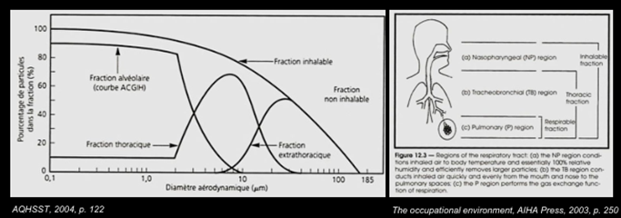
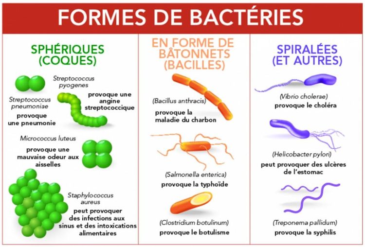
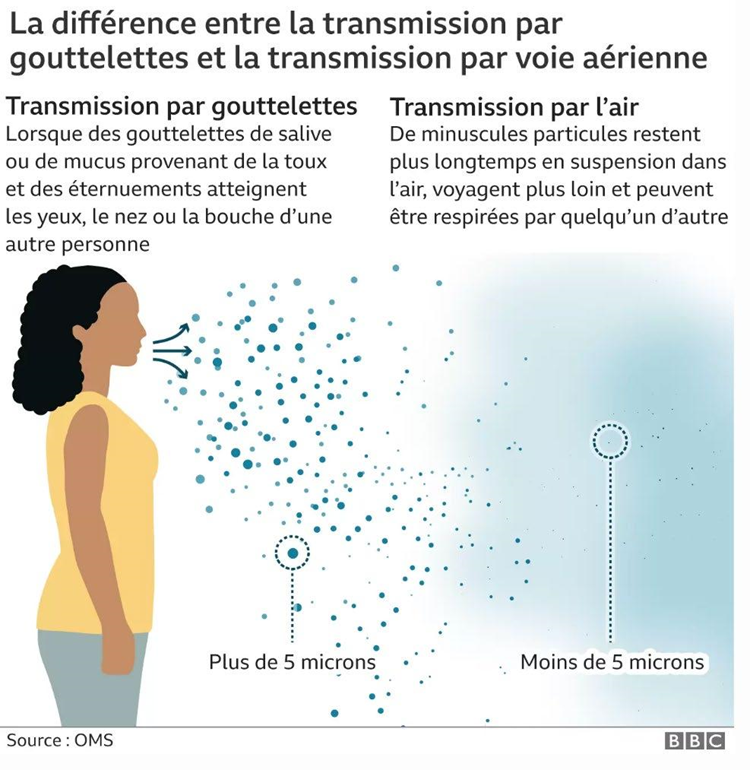
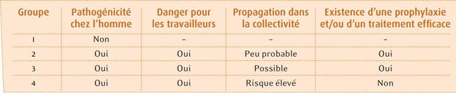
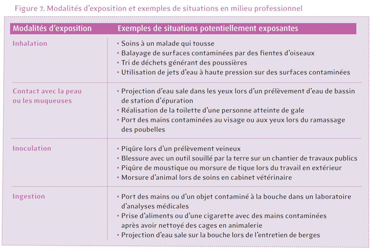
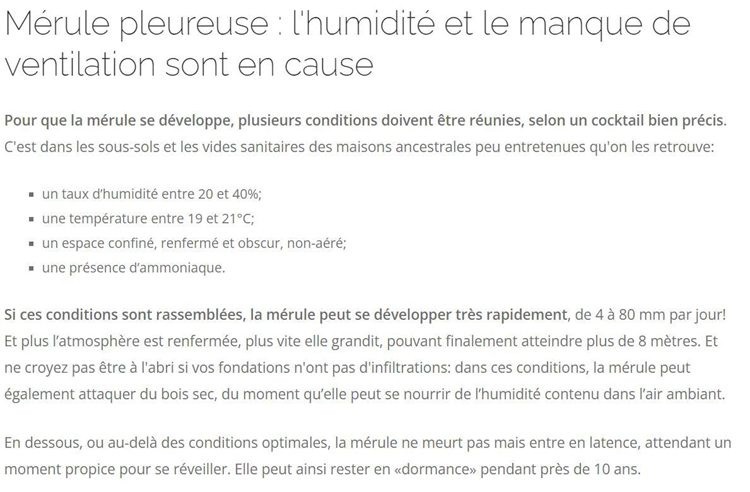
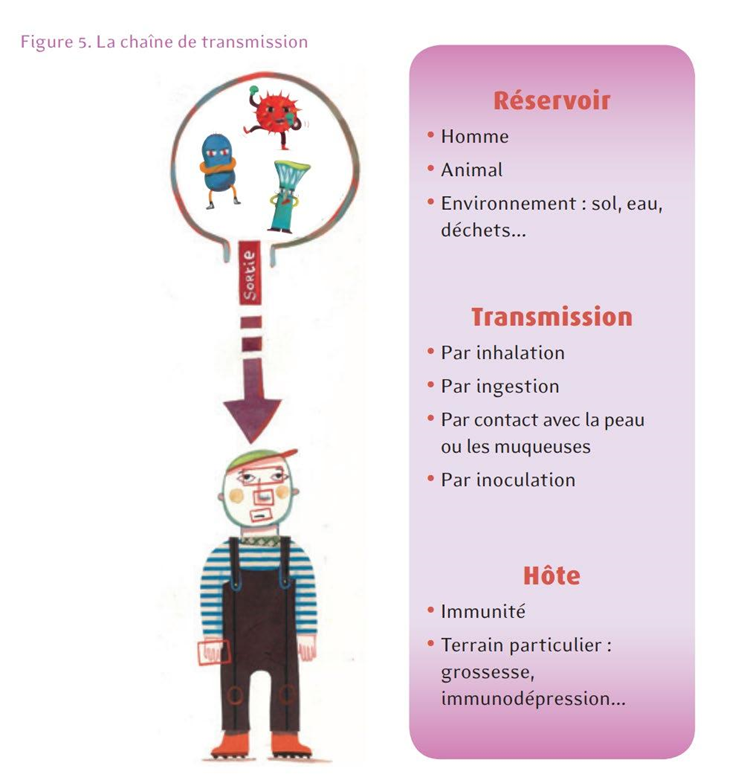
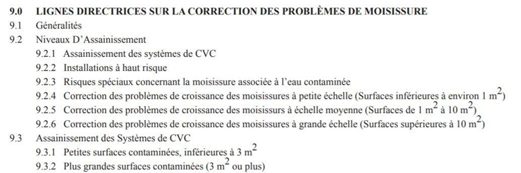
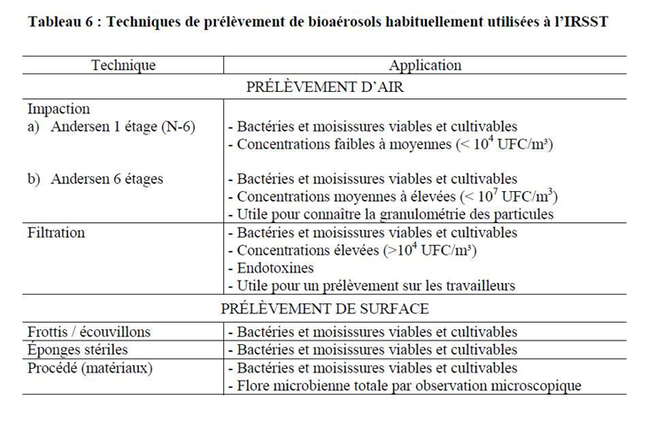
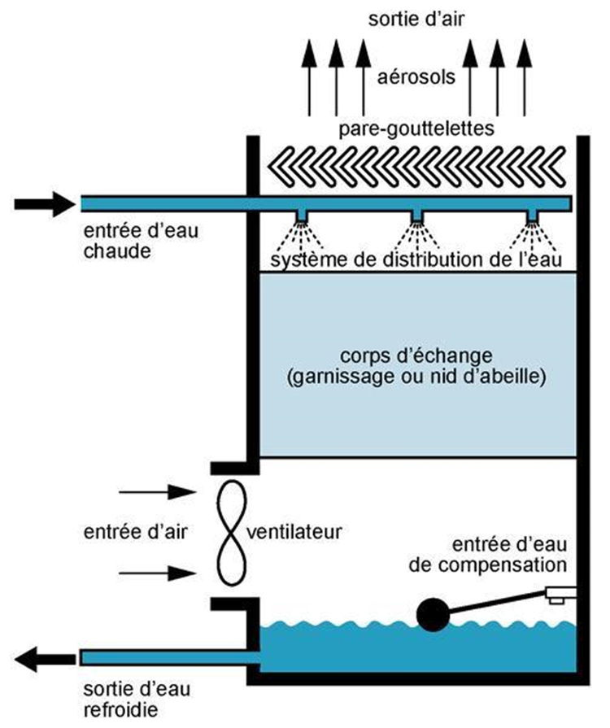

Bioaérosols
Les Bioaérosols sont des particules aéroportées d'origine biologique (virus, bactéries, moisissures, levures, leurs fragments et toxines). Ils peuvent être infectieux, allergiques, toxiniques ou cancérogènes. L'inspection visuelle reste la méthode de diagnostic la plus fiable pour les moisissures ; l'échantillonnage de l'air est peu indiqué. En mine, ce sont les bâtiments humides, les dortoirs FIFO et les tours de refroidissement qui posent les enjeux les plus fréquents.
Table des matières
- Définition et microorganismes
- Effets sur la santé
- Sources et milieux
- Méthodes d'évaluation
- Critères d'action
- Mesures préventives
- Application terrain
- Ressources
Définition et microorganismes
Les bioaérosols sont des particules aéroportées vivantes ou issues de microorganismes, incluant fragments, résidus métaboliques et toxines. Ils constituent un sous-type particulier d'aérosols et un cas de danger biologique.
Tailles typiques (la plupart respirables).

Toucher l'image pour l'agrandir| Type | Taille | Caractéristiques |
|---|---|---|
| Virus | 0,02-0,25 µm | ADN/ARN + paroi protéique, parasite cellulaire (SRAS-CoV-2, grippe) |
| Bactéries | 1-10 µm | Gram (+) ou (-), spores possibles (tuberculose, légionellose) |
| Levures | 1-100 µm | Unicellulaires, bourgeonnement (Candida) |
| Moisissures | 2-100 µm | Pluricellulaires, spores (Aspergillus, Penicillium, Stachybotrys) |
Les bactéries Gram (-) libèrent des endotoxines lors de leur division. Certaines bactéries Gram (+/-) produisent des exotoxines. Certaines moisissures produisent des mycotoxines et des COV microbiens.
Formes typiques des bactéries.

Toucher l'image pour l'agrandirLa génération de particules dépend de l'activité (parler, tousser, éternuer).

Toucher l'image pour l'agrandirEffets sur la santé
| Risque | Description | Exemples |
|---|---|---|
| Infectieux | Pénétration du pathogène | Tuberculose, légionellose, grippe, COVID-19 |
| Allergique | Hypersensibilité chez certains, voir Sensibilisants respiratoires et cutanés | Rhinite, asthme, pneumonie allergique |
| Toxinique | Toxines microbiennes | Endotoxines (fièvre), mycotoxines (foie, rein) |
| Cancérogène | Virus oncogènes ou aflatoxines, voir Cancérogénicité | VPH, hépatite B, aflatoxines |
Les microorganismes sont classés en groupes de risque.

Toucher l'image pour l'agrandirMaladie du Légionnaire : Legionella pneumophila vit entre 20 et 50 °C (optimum 35 °C). Transmission par inhalation d'Aérosols contaminés (tours de refroidissement, douches).

Toucher l'image pour l'agrandirSources et milieux
Bactéries
- Extérieur : sol, eau, plantes, animaux.
- Intérieur : occupants, traitement des eaux usées, élevages.
Moisissures
- Conditions de croissance : humidité, surfaces poreuses imbibées d'eau > 48 h, T° ~20 °C.
- Dégâts d'eau, infiltrations, refoulements d'égouts.
- Eau stagnante (humidificateurs, déshumidificateurs).
La mérule pleureuse est un cas particulier qui s'attaque à la structure du bâti.

Toucher l'image pour l'agrandirExemples par milieu
| Milieu | Microorganismes |
|---|---|
| Boulangerie | Penicillium, Aspergillus, Cladosporium |
| Bureaux (ventilation) | Aspergillus, Cladosporium, Legionella |
| Eaux usées | Aspergillus, Penicillium, Cladosporium |
| Scieries | Alternaria, Cryptostoma, Paecilomyces |
| Élevage de porc | Bactéries, endotoxines |
Méthodes d'évaluation
Démarche d'évaluation proposée : cibler les réservoirs, identifier les modes de transmission, évaluer le risque.

Toucher l'image pour l'agrandirÉvaluation qualitative
- Inspection visuelle : méthode la plus fiable pour les moisissures (taches, décoloration, odeur).

Toucher l'image pour l'agrandir- Recherche de sources d'humidité.
Évaluation quantitative
Rarement nécessaire. Surtout pour les moisissures.
| Méthode | Description |
|---|---|
| Prélèvement de matériaux | Bouts de gypse, fragments |
| Surfaces | Lame auto-adhésive, écouvillon, éponge stérile, frottis (10 cm²) |
| Impacteur Andersen (air) | Culture, identification, quantitatif. Délai 10-14 jours |
| Échantillonnage de spores (air) | Analyse microscopique, plus rapide (1-2 jours) |
| Échantillons d'eau | Tours de refroidissement (Legionella) |
L'échantillonnage de l'air suit le guide IRSST T-06.

Toucher l'image pour l'agrandirPrélèvement d'eau dans une tour de refroidissement.

Toucher l'image pour l'agrandirRéférence : Guide IRSST T-06 section 2.5 et Guide IRSST T-23.
Pour l'interprétation : toujours comparer le milieu intérieur au milieu extérieur (ou à un local non contaminé). Voir aussi Qualité de l'air intérieur.
Critères d'action
Selon le Guide IRSST T-23
| Paramètre | Critère |
|---|---|
| Bactéries totales (industriel) | > 10 000 UFC/m³ |
| Bactéries totales (bureaux) | > 1 000 UFC/m³ |
| Bactéries Gram (-) (industriel) | > 1 000 UFC/m³ |
| Bactéries Gram (-) (bureaux) | Présence |
| Moisissures | Croissance visible, odeur, espèces ou concentrations > site de référence |
Régie du bâtiment (Loi sur le bâtiment, tours de refroidissement)
- 10 000 à 1 000 000 UFC/L : identifier causes, appliquer mesures correctives.
1 000 000 UFC/L : arrêt immédiat des ventilateurs, décontamination.
Mesures préventives
- Contrôle de l'humidité : maintenir HR < 60 %, réparer infiltrations rapidement.
- Entretien des systèmes de ventilation (filtres, conduits, humidificateurs).
- Nettoyage et désinfection des surfaces et de l'eau (eau de Javel 1 %).
- Méthodes de travail : humidification par pulvérisation, aspiration HEPA.
- Protection respiratoire (APR) selon CSA Z94.4-11 (gestion graduée du risque).
- Formation des travailleurs sur les agents infectieux.
Application terrain
Sources de bioaérosols en mine
| Source | Risque |
|---|---|
| Dortoirs FIFO, vestiaires communs | Transmission interhumaine (grippe, SRAS-CoV-2) |
| Tours de refroidissement (concentrateur) | Legionella |
| Bâtiments anciens à dégâts d'eau | Moisissures (Aspergillus, Stachybotrys) |
| Cafétérias et cuisines | Contamination microbienne croisée |
| Galeries humides | Bioaérosols variables, biofilms |
| Eaux d'exhaure stagnantes | Bactéries, sulfure d'hydrogène biologique |
Particularités minières
- Les sites FIFO doivent gérer la transmission interhumaine dans les dortoirs et cafétérias (programme grippe, plans pandémie). Voir aussi le wiki psychosociale frère : Milieu Minier et FIFO.
- Les tours de refroidissement de l'usine doivent suivre le programme RBQ de prévention Legionella (Loi sur le bâtiment).
- Les bâtiments mobiles ou semi-permanents sur sites d'exploration sont sensibles aux infiltrations et à la croissance fongique en climat humide.
Ressources
| Document | Type | Source |
|---|---|---|
| Guide T-06 | Guide technique | IRSST |
| Guide T-23 (bioaérosols) | Guide technique | IRSST |
| CSA Z94.4-11 (Protection respiratoire (APR)) | Norme | CSA |
| Programme Legionella RBQ | Programme | RBQ |
Articles wiki connexes
Pages qui pointent ici (11)
- 🎯 Démarrage rapide, conseiller SST Hygiène industrielle
- 🏠 Wiki Hygiène industrielle, mines Hygiène industrielle
- Aérosols Hygiène industrielle
- Agresseurs biologiques Hygiène industrielle
- Aspiration et dangers biologiques Hygiène industrielle
- Aspiration et dangers biologiques Toxicologie
- Environnement de travail Hygiène industrielle
- Espaces clos Sécurité industrielle
- Protection respiratoire (APR) Hygiène industrielle
- Qualité de l'air intérieur Hygiène industrielle
- Sensibilisants respiratoires et cutanés Toxicologie